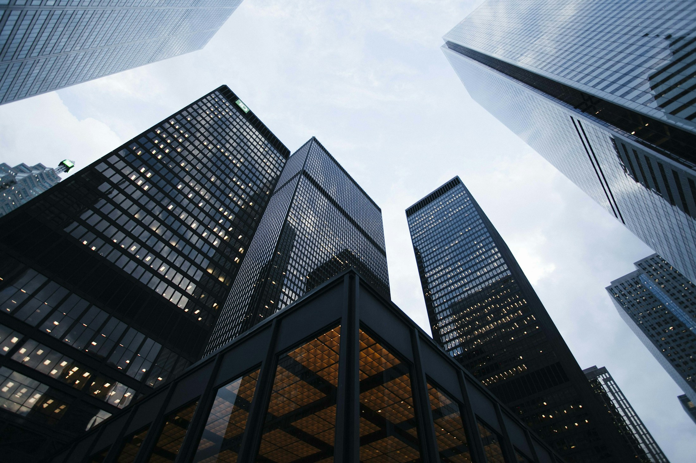

品質政策與管理
正式政策內容準備中
以下為本專區的內容項目。具體政策、制度與執行措施，待公司提供並確認後公開。
品質管理理念
公司品質政策、管理方針與適用範圍，待正式資料確認後公開。
施工品質管理
施工品質管理流程、執行責任與相關紀錄，待公司提供。
材料檢驗與自主檢查
材料檢驗程序、自主檢查制度與相關表單，將依公司確認資料更新。

QUALITY MANAGEMENT
品質管理流程、材料檢驗與自主檢查制度，待公司提供。
建築／工程情境示意以下為本專區的內容項目。具體政策、制度與執行措施，待公司提供並確認後公開。
公司品質政策、管理方針與適用範圍，待正式資料確認後公開。
施工品質管理流程、執行責任與相關紀錄，待公司提供。
材料檢驗程序、自主檢查制度與相關表單，將依公司確認資料更新。